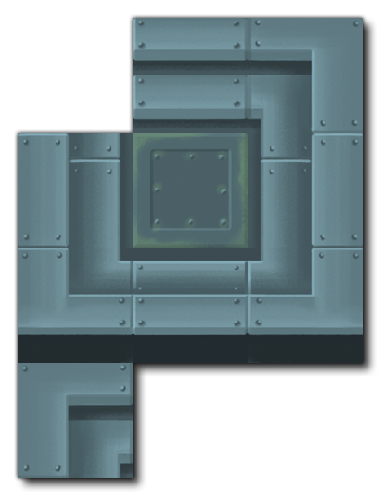
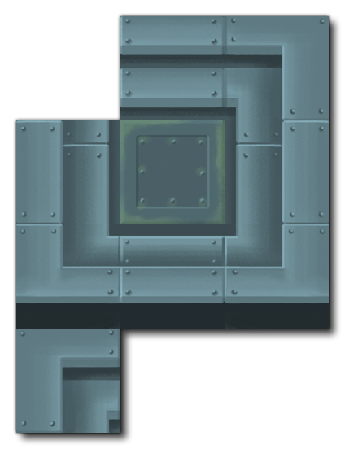

To add a background to our game we want to use a Tile Set resource. Tile Sets are all based on sprites, and although so far we have only used sprites for game entities like the player or the bullets, we can also use sprites for backgrounds and tile sets, which can also be animated and do other interesting things.
First thing to do is create a new Sprite resource (right click  on the Sprite resource folder and select Create). Then import a tile set image. We are going to use the following image:

on the Sprite resource folder and select Create). Then import a tile set image. We are going to use the following image:

You can get the above tile set from the TutorialResources folder that the tutorial made automatically, in the "Images" sub-folder, when you click the Import button (if you have any issues, you can also find the images here).
The tiles we are going to use for the game are 128x128 pixels each, all placed on the same image in a grid. Tile Sets are always comprised of a single sprite image, and must always be based on a grid, although the grid does not have to be square, just regular, ie: you can have 24x96 tiles, or 32x32, etc... as long as each part of the tile set image is on a grid it can be used in GameMaker Studio 2 as a tile set.
Note that the top left corner of the tile set sprite is empty. GameMaker Studio 2 will always use the first tile of a tile set as a "blank" tile, which is what is placed by default as an empty tile. When you add a tilemap layer in the room editor, which we'll cover in a moment, it will be empty and you won't see anything, but it's actualy filled with these "blank" tiles, and when you start to paint tiles onto the tilemap layer, if you delete a tile, it's not actually being removed, but instead it's being changed for this "empty" tile too. Note that even if the image you supply has non-transparent pixels in this first grid cell, they will not be drawn, so when making tile sets keep this in mind and just leave this first tile blank.
You can name this sprite now, something like "spr_background", and close the sprite editor before continuing (we don't need to set the origin of this sprite nor any of the collision properties as they are not relevant for tiles).